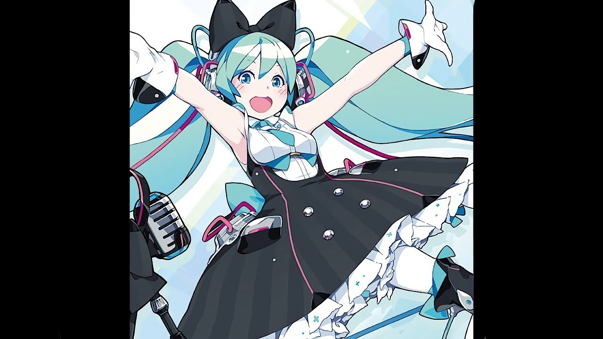

Mitsukii_Sempai
Пространство создателя / Architecture & Vibe
Генезис Anireil
Когда ко мне в голову пришло идея создать свой флуда я даже и не думал что у меня будет этот сайт, когда я создал этот сайт у меня горели глаза, ниже будет подробно
name: 'Mitsukii_Sempai',
focus: 'High Quality Code & Aesthetic UI',
vision: 'Уютное пространство без токсичности',
state: 'Active Development 🚀'
};
Музыка во время кодирование
У меня всегда играет разная музыка но вот мои любимые песни/исполнител: Rebzyyx, Hatsune Miku, Unhappy и многое другое

Технологии & Навыки
При создании моих проектов мне помогал ИИ и стал моим замечательным портнером, и сейчас я продолжаю создавать что-то новое и обновлять моего бота
Любимые тайтлы и миры
Мои любимые тайтлы (их очень много) Хоримия, Это фарфоровая кукла влюбилась, Песнь ночных сов и все прочие романтики а также я обожаю играть в геншин с майнкрафтом они мои самые любимые игры, также хочу сказать что когда смотрю аниме это меня очень успакаивает очень люблю романтические тайтлы.
Создание разработки Anireil
Пришло мне создать флуд ещё в феврале 26 года, я тогда искал со владельца и нашел наверное самую лучшую, после этого мы вместе начали строить этот флуд из-за блокировки тг и по личным причинам пришлось сделать паузу но все же 9 апреля флуд официально было открыто, потом я запустил бота для принятие анкет моей главной целью было чтобы флуд стал популярном чтобы каждый нашел свое месте чтобы всем было комфортно.